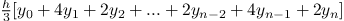
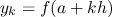

SICP Процедуры высшего порядка, упражнения 1.29-1.34
Упражнение 1.29
Правило Симпсона более точный метод вычисления интеграла чем метод приведенный ранее в книге. По правилу Симпсона, интеграл функции f от а до b приблизительно равен , где h=(b-a)/n, . Напишите процедуру вычисляющую интеграл по этому методу. Сравните результаты с предыдущим методом при n=100, n=1000.
1 (define (sum-simpson term a next b controln k) 2 (if (> a b) 3 0 4 (+ (* (controln k)(term a)) 5 (sum-simpson term (next a) next b controln (+ k 1))))) 6 7 (define (integral-simpson f a b n) 8 (define (getdx start end steps) 9 (/ (- end start) steps)) 10 (let ((dx (getdx a b n))) 11 (define (controln step-number) 12 (cond ((= step-number 0) 1) 13 ((even? step-number) 2) 14 (else 4))) 15 16 (define (next-a x) 17 (+ x dx)) 18 ;; ;; (define (add-dx x) (+ x (getdx dx))) 19 (* (sum-simpson f a next-a b controln 0) 20 (/ (getdx a b n) 3)) 21 )) 22 23 (integral-simpson cube 0 1 100);;19/75 0.25333333333333335 24 (integral-simpson cube 0 1 1000);; 751/3000 0.25033333333333335
Упражнение 1.30
Процедура sum приведенная в книге генерирует линейную рекурсию. Процедуру можно переписать что бы сумма вычислялась итерациями. Покажите как это сделать.
1 (define (sum term a next b) 2 (define (iter a result) 3 (if <??> 4 <??> 5 (iter <??> <??>))) 6 (iter <??> <??>))
1 (define (sum term a next b) 2 (define (iter a result) 3 (if (> a b) 4 result 5 (iter (next a) (+ result (term a))))) 6 (iter a 0)) 7 (sum identity 1 inc 5) ; 15
Упражнение 1.31
a. Процедура sum является лишь простым примером из огромного числа подобных абстракций, которые могут быть сформулированы через процедуры высшего порядка. Напишите аналогичную процедуру product которая возвращает произведение значений функции в точках заданного интервала. Покажите как определить факториал через данную процедуру. Также используйте product для вычисления приближения  используя формулу
используя формулу  .
.
b. Если ваша процедура генерирует рекурсивный процесс, перепишите её на итерационный процесс.
1 (define (product term a next b) 2 (if (> a b) 3 1 4 (* (term a) 5 (product term (next a) next b)))) 6 7 (define (producti term a next b) 8 (define (iter a result) 9 (if (> a b) 10 result 11 (iter (next a) (* result (term a))))) 12 (iter a 1)) 13 14 (define (product-factorial n) 15 (product identity 1 inc 5)) 16 (product-factorial 5) ;; 120 17 18 (define (multiplicate-pi x) 19 (square (/ (+ 4 x) (+ 5 x)))) 20 21 (define (product-pi n) 22 (define (sub-pi x) 23 (* (/ x (+ 1 x)) (/ (+ x 2) (+ x 1)))) 24 (define (next-x x) 25 (+ x 2)) 26 (* 4 (product sub-pi 2 next-x n))) 27 (product-pi 1000) ; 3.1431607055322663
Упражнение 1.32
a. Покажите что процедуры sum и product оба являются частными случаями более общей нотации accumulate, которая объединяет набор терминов в более общую функцию.
b. сделайте рекурсивный и итерационный вариант.
1 ;; рекурсивный 2 (define (accumulate combiner null-value term a next b) 3 (if (> a b) 4 null-value 5 (combiner (term a) 6 (accumulate combiner null-value term (next a) next b)))) 7 8 ;; итерационный 9 (define (accumulate combiner null-value term a next b) 10 (define (iter a result) 11 (if (> a b) 12 result 13 (iter (next a) (combiner result (term a))))) 14 (iter a null-value)) 15 16 (define (product term a next b) 17 (accumulate * 1 term a next b)) 18 (define (sum term a next b) 19 (accumulate + 0 term a next b)) 20 21 (define (accumulate-factorial n) 22 (product identity 1 inc 5)) 23 (accumulate-factorial 5) ; 120 24 (define (accumulate-sum a b) 25 (sum identity a inc b)) 26 (accumulate-sum 1 5) ; 15
Упражнение 1.33
Вы можете получить еще более общую версию accumulate, введя понятие фильтра по слагаемым. То есть складывать (или перемножать) только те значения которые удовлетворяют заданному условию. Результирующая абстракция filtered-accumulate все те же параметры как и accumulate, плюс дополнительным предикатом одного аргумента, описывающим фильтр. Напишите процедуру filtered-accumulate. Покажите как выразить следующие понятия используя её.
a. Сумма квадратов простых чисел в интервале от a до b. b. Перемножение всех положительных целых меньших чем n, которые взаимно простых с n (GCD (i,n) = 1)
1 ;; рекурсивный 2 (define (filtered-accumulate combiner null-value term a next b filter) 3 (if (> a b) 4 null-value 5 (combiner (if (filter a b) (term a) null-value) 6 (filtered-accumulate combiner null-value term (next a) next b filter)))) 7 8 ;; итерационный 9 (define (filtered-accumulate combiner null-value term a next b filter) 10 (define (iter a result) 11 (if (> a b) 12 result 13 (iter (next a) (if (filter a b) 14 (combiner result (term a)) 15 result) 16 ))) 17 (iter a null-value)) 18 19 20 ;; cумма квадратов целых в диапазоне 21 ;; передаем в фильтр два параметра a b что бы работало абстракция со следующим примером 22 (define (filter-prime? x end) 23 (if (prime? x) 24 1 25 false)) 26 (define (sum-square-primes a b) 27 (filtered-accumulate + 0 square a inc b filter-prime?)) 28 (sum-square-primes 1 5) ; 14 29 30 ;; перемножение всех взаимно простых с n в диапазоне [m n] 31 (define (filter-relative-prime? x end) 32 (if (= (gcd x end) 1) 33 1 34 false)) 35 36 (define (product-relative-primes a b) 37 (filtered-accumulate * 1 identity a inc b filter-relative-prime?)) 38 (product-relative-primes 1 6); 5
Упражнение 1.34
Предположим мы определили процедуру
1 (define (f g) 2 (g 2)) 3 (f square) ; 4 4 (f (lambda (z) (* z (+ z 1)))) ; 6 5 6 (2 2)
Что произойдет если вызвать (f f)?
Происходит ошибка ;The object 2 is not applicable. Функция f ожидает в качестве параметра получить функцию которую можно вызвать, она его и получает и вызывает функцию f с параметром 2 (рекурсивно второй раз), и пытается выполнить функцию (2 2), на что и ругается интерпретатор, потому что 2 не процедура.